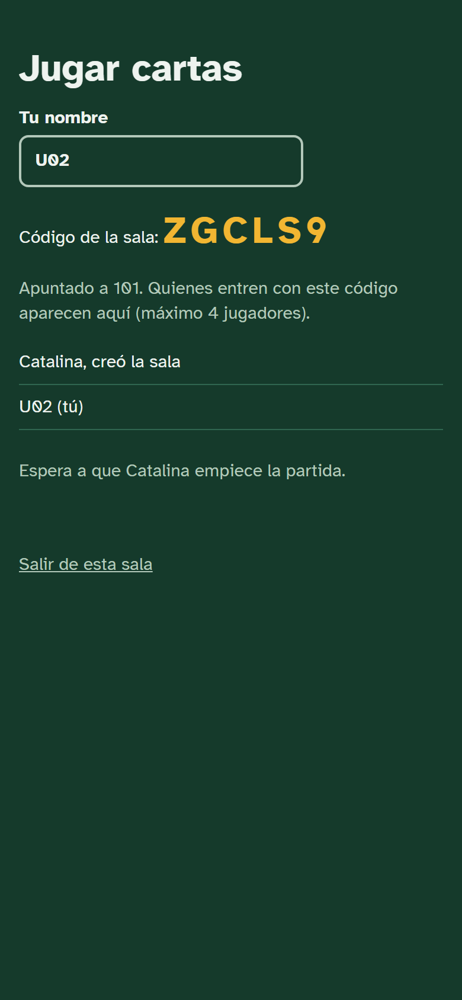
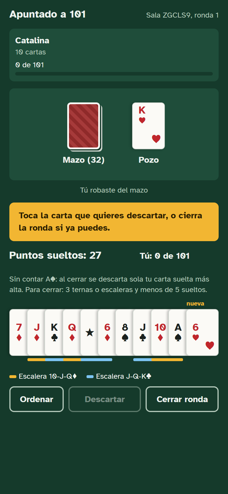
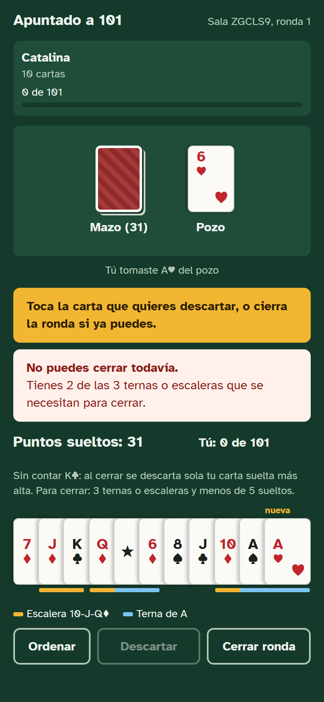
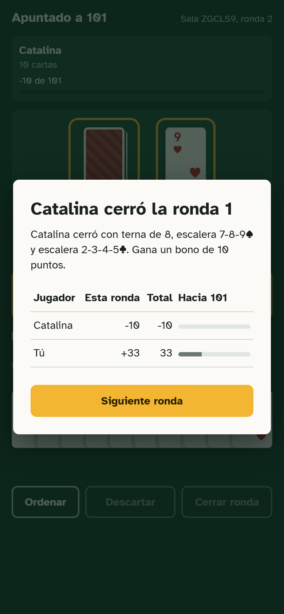

Cada sesión dejó tres tipos de evidencia: la bitácora de auditoría que genera el propio sistema (H6), descargada como CSV al terminar la partida; las métricas de tiempos y latencia; y capturas de pantalla de la partida en curso. Todo está en docs/validacion/ del repositorio.
| Evaluador | Modalidad | Mesa | Sala | Rondas | Turnos (del evaluador) | Bitácora | Filas |
|---|---|---|---|---|---|---|---|
| U01 | Clásica | U01, Nicolas | DSCAB2 | 1 | 17 (8) | U01_clasica_DSCAB2.csv | 35 |
| U02 | Apuntado | U02, Catalina | 3L7QAM | 10 | 105 (52) | U02_apuntado_3L7QAM.csv | 211 |
| U03 | Clásica | U03, Elizabeth | MTFFTN | 1 | 7 (3) | U03_clasica_MTFFTN.csv | 14 |
| U03 | Apuntado | U03, Elizabeth | 524DJ7 | 8 | 87 (44) | U03_apuntado_524DJ7.csv | 174 |
| U04 | Clásica | U04, Nicolas, Catalina | K6C5K2 | 1 | 12 (4) | U04_clasica_K6C5K2.csv | 24 |
| U05 | Apuntado | U05, Catalina, Elizabeth | RNFRVY | 8 | 130 (33) | U05_apuntado_RNFRVY.csv | 260 |
La bitácora registra fecha y hora (UTC), partida, ronda, turno, jugador, acción (ROBAR_MAZO, ROBAR_DESCARTE, DESCARTAR, SOLICITAR_CIERRE), carta, resultado y motivo. Los cierres rechazados quedan con su motivo textual, que es el mismo que vio el jugador:
ocurrida_en,partida,ronda,turno,jugador,accion,carta,resultado,motivo
…,1,1,4,U01,SOLICITAR_CIERRE,,RECHAZADA,Te falta 1 cuarta. Tienes 3 ternas; para cerrar se necesita
1 cuarta + 2 ternas + 1 carta para descartar.
…,1,1,17,Nicolas,SOLICITAR_CIERRE,,ACEPTADA,
Marcador de Apuntado. Las tres partidas de Apuntado llegaron a la declaración de fin por 101, que era la tarea 4 del guion: en la de U02 Catalina salió con 110 en la ronda 10; en la de U03 Elizabeth salió con 166 en la ronda 8; en la de tres jugadores, U05 salió con 116 en la ronda 6 y la partida siguió entre Catalina y Elizabeth hasta que Elizabeth llegó a 108 en la ronda 8. En ningún caso el sistema dejó seguir a un jugador eliminado ni declaró el fin antes de tiempo.
Latencia. Se midió el tiempo de ida y vuelta entre que el cliente envía una orden por WebSocket y recibe la confirmación del servidor. Promedio de 3,3 a 5,4 ms y p95 de 4,5 a 9,1 ms por sesión; el turno completo (robar y descartar) sumó de 7,7 a 10,9 ms de comunicación. El rechazo de un cierre llegó en 5 a 6 ms. Las sesiones se hicieron en red local con el servidor en un portátil, así que estas cifras son el piso del sistema; en Render se suma la latencia de internet.
Grabaciones de pantalla. Además se grabaron en el celular dos partidas completas jugadas sobre el despliegue en Render, ya con los ajustes de la sección 3.4; están en docs/validacion/grabaciones/.
| Video | Modalidad | Sala | Duración | Qué se ve | Bitácora |
|---|---|---|---|---|---|
| partida_1_2026-11-26_2245.mp4 | Apuntado: Nico (equipo, graba), Alejo y Matías | PX3ZRZ | 6 min | Turnos completos con robo del mazo y del pozo, aviso «Aún no puedes cerrar», cierre con bono de 10 y resumen de la ronda 1 con los puntos hacia 101. | real_PX3ZRZ.csv: 56 jugadas en 5 min 19 s; 4 cierres rechazados con su motivo antes del cierre válido en el turno 26; de 11,4 a 13,1 s por turno en promedio para cada jugador. El servidor se reinició antes de descargarla, y como la sala vivía en memoria (sección 5.1), la descarga se corrigió para consultar la base por el código. |
| partida_2_2026-11-26_2303.mp4 | Clásica: Mateo (graba) y Lucy | CZBUMR | 2 min 39 s | Cierre inválido deliberado en el turno 3 («Te falta 1 cuarta. Tienes 2 ternas…»), aviso «¡Ya puedes cerrar la ronda!» y cierre válido en el turno 13. | real_CZBUMR.csv: 27 jugadas en 1 min 54 s; 10,6 s y 7,3 s por turno en promedio para cada jugador. |
Figura X
Capturas de las sesiones en celular: sala de espera, mesa con la mano, rechazo de un cierre con su motivo y resumen de ronda en Apuntado
 |
 |
 |
 |
| ID | Modalidad probada | ¿Logró cerrar ronda válida? | Errores / confusiones detectadas | Tiempo prom. por turno | SUS | Satisfacción (1-5) |
|---|---|---|---|---|---|---|
| U01 | Clásica (4-3-3) | No (cerró primero el rival) | Intentó cerrar con 3 ternas y sin cuarta; entendió el rechazo, pero esperaba que el botón «Cerrar» le avisara antes. | 11,5 s | 72,5 | 4,0 |
| U02 | Apuntado (101) | Sí (4 de 10 rondas) | Intentó cerrar con una sola terna para «ver qué pasaba». No sabía que, al cerrar, se descarta solo la carta suelta más alta. | 13,0 s | 85,0 | 4,5 |
| U03 | Ambas | Sí (Apuntado) | En el primer turno no distinguió el pozo del mazo. Buscó un botón de reglas que no existe. | 11,3 s / 12,7 s | 77,5 | 4,0 |
| U04 | Clásica, 3 jugadores | Sí | Pidió cartas más grandes; con la mano llena en su celular las cartas se solapan. No veía cuánto le faltaba al rival para jugar. | 12,1 s | 70,0 | 3,5 |
| U05 | Apuntado, 3 jugadores | Sí (2 rondas) | No conocía el Apuntado: entendió la acumulación hasta 101 solo al ver el primer resumen de ronda. Pidió las reglas al empezar. | 12,6 s | 80,0 | 4,5 |
| Métrica | Resultado | Meta | ¿Cumple? |
|---|---|---|---|
| Tasa de éxito en cierre | 4 de 5 evaluadores (80 %) cerraron al menos una ronda válida; U01 jugó una sola ronda de Clásica y la cerró primero el rival. | ≥ 80 % | Sí |
| Errores de regla percibidos | 2 cierres rechazados quedaron en la bitácora (U01 y U02, que hicieron la tarea 3 completa); U03, U04 y U05 no alcanzaron a intentar el cierre inválido antes de que la ronda terminara. Los dos rechazos se entendieron por el mensaje. 0 errores del motor: ningún cierre válido se rechazó ni uno inválido se aceptó. | Registrar | — |
| Tiempo por turno | Promedio de 11,3 a 13,0 s; p95 de 14,9 a 19,5 s. | ≤ 20 s | Sí |
| Latencia | p95 ≤ 9,1 ms por orden; los cinco dijeron que el descarte del rival «aparece al instante». | p95 < 300 ms | Sí |
| Satisfacción | SUS promedio 77,0 (de 70,0 a 85,0); calificación general 4,1 de 5. | SUS ≥ 68 | Sí |
Lectura. La parte que más pesa en la arquitectura salió bien: el motor validó todas las combinaciones y los mensajes de rechazo, que arma cada plug-in porque es el que conoce su regla (ADR-03), bastaron para que los evaluadores entendieran qué faltaba sin preguntar. Lo que falló fue la claridad antes de jugar: tres de cinco (U03, U04, U05) pidieron las reglas, y dos (U01, U02) habrían preferido saber que no podían cerrar antes de intentarlo. Los SUS más bajos (U04, U01) coinciden con los problemas de pantalla y de anticipación, no con errores del sistema. Las confusiones coinciden con lo que ya había señalado la evaluación heurística (ayuda y prevención de errores), lo que confirma esos dos puntos como prioritarios.
Segunda ronda (grabada en Render, con los ajustes de la sección 3.4). Los cuatro evaluadores nuevos entendieron las instrucciones desde «¿Cómo se juega?»; lo que más les costó fue acostumbrarse a la dinámica de turnos y combinaciones, lo esperable sin experiencia previa con cartas. Los datos salen de las bitácoras reales de cada sala; al terminar respondieron el SUS y una calificación general de 1 a 5 (respuestas ítem por ítem en docs/validacion/encuestas_sus_segunda_ronda.csv).
| Evaluador | Modalidad | ¿Logró cerrar ronda válida? | Errores / confusiones detectadas | Tiempo prom. por turno | SUS | Satisfacción (1-5) |
|---|---|---|---|---|---|---|
| Alejo | Apuntado (3 jugadores) | Sí (turno 26) | Dos intentos de cierre rechazados con 2 de las 3 ternas («Tienes 2 de las 3 ternas o escaleras…») antes de lograrlo; cerró con bono de 10. | 13,1 s | 85,0 | 5 |
| Matías | Apuntado (3 jugadores) | No (cerró Alejo primero) | Ninguno registrado; como los demás, lo que más le costó fue acostumbrarse a la dinámica. | 11,4 s | 92,5 | 4 |
| Mateo | Clásica (2 jugadores) | Sí (turno 13) | Intento de cierre en el turno 3 rechazado («Te falta 1 cuarta. Tienes 2 ternas…»); después cerró cuando el botón marcó «Cerrar ronda ✓». | 10,6 s | 80,0 | 5 |
| Lucy | Clásica (2 jugadores) | No (cerró Mateo primero) | Ninguno registrado; turnos rápidos. | 7,3 s | 92,5 | 4 |
En esta ronda los dos cierres válidos se lograron y los cinco rechazos de la bitácora trajeron el motivo exacto, sin ningún error del motor; quienes no cerraron fue porque otro jugador cerró la ronda antes. El SUS promedio fue 87,5 (de 80,0 a 92,5), por encima del de la primera ronda (77,0), lo que sugiere que los ajustes de la sección 3.4 mejoraron la experiencia; la satisfacción general fue 4,5 de 5 y todos los tiempos por turno quedaron bajo la meta de 20 s.
Trazabilidad con las historias. La tarea 1 del guion valida H1 (todos crearon o se unieron a una sala sin ayuda); la tarea 2, H2 (ningún evaluador logró jugar fuera de turno ni robar dos veces); la tarea 3, H3 y H4 (los rechazos de la bitácora traen el mismo motivo que vio el jugador), y la tarea 4, H4 y el fin a 101 en las tres partidas de Apuntado. H6 se validó al descargar cada bitácora. Los hallazgos que no cubría ninguna historia (reglas, aviso antes de cerrar, tamaño de las cartas) dieron origen a H9 (sección 3.4).